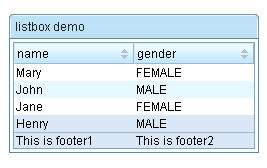

ZK UI plugin,the same as the ZKGrails plugin, seamlessly integrates ZK with Grails' infrastructures.
The difference is it uses the Grails' infrastructures more, such as gsp, controllers rather than zk's zul.
ZK UI Grails plug-ins brings powerful features as follows
Use Tag Libraries
<z:window title="My First ZK UI Application" border="normal">
Hello World!
</z:window>
Provides a Composer Artefacts simplify the integration between grails and zk
Usage:
grails create-composer [name]
A groovy way to create zk components, following groovy Builder paradigm
Controller
def index = {
def window = new Window(title: "listbox demo", border: "normal")
window << {
listbox {
listhead(sizable: true) {
listheader(label: "name", sort: "auto")
listheader(label: "gender", sort: "auto")
}
listitem {
listcell(label: "Mary")
listcell(label: "FEMALE")
}
listitem {
listcell(label: "John")
listcell(label: "MALE")
}
listitem {
listcell(label: "Jane")
listcell(label: "FEMALE")
}
listitem {
listcell(label: "Henry")
listcell(label: "MALE")
}
listfoot {
listfooter {
label(value: "This is footer1")
}
listfooter {
label(value: "This is footer2")
}
}
}
}
[window:window]
}View
<z:render comp="${window}"/>

Provides a very convenient API for extracting and manipulating zk component, using the jquery-like methods.
View
<z:window id="window">
<z:textbox name="t1" value="value1"/>
<z:textbox id="t2" value="value2"/>
<z:textbox value="value3"/>
</z:window>Selector code
assert 3 == window.select("textbox").size()
assert "value2" == window.select("#t2")[0].value
assert "value1" == window.select("textbox[name='t1']")[0].valueDOCTYPE
The html pages generated by gsp must generate the doc type as follows.
<!DOCTYPE html PUBLIC "-//W3C//DTD XHTML 1.0 Transitional//EN"
"http://www.w3.org/TR/xhtml1/DTD/xhtml1-transitional.dtd">
Importing resources
Add the tag <z:resources/> to the head of the layout/main.gsp or any page that you want to use ZK UI Grails plug-ins.
<html xmlns="http://www.w3.org/1999/xhtml">
<head>
<z:resources/>
Hello World!
<!DOCTYPE html PUBLIC "-//W3C//DTD XHTML 1.0 Transitional//EN"
"http://www.w3.org/TR/xhtml1/DTD/xhtml1-transitional.dtd">
<html xmlns="http://www.w3.org/1999/xhtml">
<head>
<title>Hello World Demo</title>
<z:resources/>
</head><body>
<z:window title="My First ZK UI Application" border="normal">
Hello World!
</z:window>
</body>
</html>Let us put some interactivity into it.
<z:button label="Say Hello" onClick="Messagebox.show('Hello World! Time now is:'+new Date())"/>
Then, when you click the button, you'll see the following:

The onClick attribute is a special attribute used to add an event listener to the component such that it is invoked when an end user clicks the component. The attribute value could be any legal groovy code.
Here we invoke
Messagebox.show(String) to show a message box as depicted above.
Notice that it is not JavaScript,It is Groovy and runs at the server
A component is a POJO, so you can reference it any way you like. However, ZK provides a convenient way to identify and to retrieve a component: identifier. For example, we named the textbox as input by assigning id to it, as follows.
<z:window title="Property Retrieval" border="normal">
Enter a property name: <z:textbox id="input"/>
<z:button label="Retrieve" onClick="Messagebox.show(System.getProperty(input.getValue()))"/>
</z:window>

A component is a POJO. You could instantiate and manipulate directly. For example, we could generate the result by instantiating a component to represent it, and then append it to another component (an instance of
vlayout).
<z:window title="Property Retrieval" border="normal">
Enter a property name: <z:textbox id="input"/>
<z:button label="Retrieve" onClick="result.appendChild(new Label(System.getProperty(input.getValue())))"/>
<z:vlayout id="result"/>
</z:window>Similarly you could change the state of a component directly. All modifications will be synchronized back to the client automatically.
<z:window title="Property Retrieval" border="normal">
Enter a property name: <z:textbox id="input"/>
<z:button label="Retrieve" onClick="result.setValue(System.getProperty(input.getValue()))"/>
<z:separator/>
<z:label id="result"/>
</z:window>Embedding Groovy code in a gsp page is straightforward and easy to read. However, in a production environment, it is usually better to separate the code from the user interfaces. In additions, the compiled Groovy code runs much faster than the embedded code which is interpreted at the run time.
To separate code from UI, we could implement a Composer
use create-composer command
grails create-composer zkuidemo.PropertyRetriever
A composer called PropertyRetrieverComposer will be created in the grails-app/composers directory
Modify the generated PropertyRetrieverComposer as follows
package zkuidemoimport org.zkoss.zk.ui.Component
import org.zkoss.zk.ui.event.Event
import org.zkoss.zul.Labelclass PropertyRetrieverComposer { def afterCompose = {Component target ->
target.addEventListener("onClick", new org.zkoss.zk.ui.event.EventListener() { //add a event listener in Groovy
public void onEvent(Event event) {
String prop = System.getProperty(target.getFellow("input").getValue())
target.getFellow("result").appendChild(new Label(prop))
}
});
}
}
The above code can be simplified as follows
package zkuidemoimport org.zkoss.zk.ui.Component
import org.zkoss.zk.ui.event.Event
import org.zkoss.zul.Labelclass PropertyRetrieverComposer { def afterCompose = {Component target ->
target.addEventListener("onClick") {Event event ->
String prop = System.getProperty(target.getFellow("input").value)
target.getFellow("result").appendChild(new Label(prop))
}
}
}Then, we could associate the Composer (zkuidemo.PropertyRetrieverComposer) with a component by use of the apply attribute as shown below.
<z:window title="Property Retrieval" border="normal">
Enter a property name: <z:textbox id="input"/>
<z:button label="Retrieve" apply="zkuidemo.PropertyRetrieverComposer"/>
<z:separator/>
<z:vlayout id="result"/>
</z:window>A composer is responsible to initialize a component (or a component of tree) when ZK loader is composing a component. It is the controller in the MVC pattern, while the component is the view,which separate the code from the user interfaces.
Composers can be created with the create-composer target. For example try running the following command from the root of a Grails project:
grails create-composer window
The command will result in the creation of a composer at the location grails-app/composers/WindowComposer.groovy:
class WindowComposer {
def afterCompose = {Component comp ->
// initialize components here
}
}
WindowComposer by default provide a
afterCompose closure to initialize components.
The create-composer command is merely for convenience and you can just as easily create composers using your favorite text editor or IDE
Each component Taglib has a
apply attribute,so you can place the composer here
<z:window id="myWindowComposer" apply="package.WindowComposer">
…
</z:window>In the WindowComposer side
def afterCompose = {Component comp ->
assert comp.id=="myWindowComposer"
assert (comp instanceof org.zkoss.zul.Window)
}If apply a
composer to a Component that implement a
IdSpace Interface,such as org.zkoss.zul.Window. The Component's children can be auto-wired to composer's fields
The following is an example. The onChange event received by Textbox
mytextbox will be forwarded to target Window
mywin as a new target event onChange_mytextbox and the Textbox component with id name "mytextbox" and Label with id name
mylabel are injected into the "mytextbox" and "mylabel" fields respectively(so you can use mytextbox and mylabel variable directly in onChange_mytextbox without problem).
Composer
class MyComposer{
Textbox mytextbox
Window self //embeded object, the supervised window "mywin"
Page page //the ZK page
Label mylabel def afterCompose = {Component comp ->
assert mytextbox.id=="mytextbox"
assert mylabel.id=="mylabel"
} def onChange_mytextbox(Event event) {
mylabel.setValue("You just entered: "+ mytextbox.getValue())
}
}View
<z:window id="mywin" apply="MyComposer">
<z:textbox id="mytextbox"/>
<z:label id="mylabel"/>
</z:window>
Actions can be redirected using the redirect method present in all composers
The parameters of
redirect is same as controller's
redirectComposer
class MyComposer{
Button mybutton def afterCompose = {Component comp -> } def onClick_mybutton(Event event) {
redirect(controller: 'demo', action: 'index', id: 1)
}
}
following code same as onClick_button abovedef afterCompose = {Component comp ->
mybutton.addEventListener('onClick'){
redirect(controller: 'demo', action: 'index', id: 1)
}
}
View
<z:window id="mywin" apply="MyComposer">
<z:button label="mybutton"/>
</z:window>
To uses Grails' underlying data binding capability,
zkui injection a
getParams method to
Component.
Domain Class
class Person {
String firstName
String lastName
String fullName
static constraints = {
}
}View
<z:window id="mywin" apply="MyComposer">
<z:textbox name="firstName"/>
<z:textbox name="lastName"/>
<z:textbox name="fullName"/>
<z:button label="submit"/>
</z:window>Composer
class MyComposer{
Button submit
def afterCompose = {Component mywin ->
submit.addEventListener('onClick'){
def person=new Person(mywin.params)
…
}
}
}A
bindData method same as in
controller also provide to Composer
def p = new Person()
bindData(p, mywin.params)
When use
grails create-composer create a composer,a unit class that is a sub-class of ComposerUnitTestCase also created
It provides a
mockComposer methods for mocking zkui's Selector,Builder and so on.
mockComposer(MyComposer)
def myComposer=new MyComposer
...
zkui injection a
renderErrors method to
Component.
If you have Domain class
class Book{
String author
String title
}In View
<z:window id="formWindow" title="demo" apply="your.Composer">
<z:textbox name="author"/>
<z:textbox name="title"/>
…
</z:window>Then in
your.Composer use renderErrors
if (!book.save()) {
formWindow.renderErrors(bean: book)
}
In addition,you can also use grails's traditional
renderErrorsIn
your.Composer
if (!book.save()) {
flash.book = book
redirect(controller: "book", action: "edit", id: book.id)
}In your view
<g:hasErrors bean="${flash.book}">
<div class="errors">
<g:renderErrors bean="${flash.book}" as="list" />
</div>
</g:hasErrors>Data binding is a mechanism that automates the data-copy plumbing code (CRUD) between UI components and the data source. Application developers only have to tell the data binding manager about the associations between UI components and the data source. Then, the data -binding manager will do all the loading (loading data from the data source to UI components) and saving (saving data from UI component into the data source) jobs automatically.
Activates Data Binding Manager
<z:window apply="org.zkoss.demo.MyComposer,org.zkoss.zkplus.databind.AnnotateDataBindingComposer">
</z:window>
For more information, please refer to the relative blog post
Databinding ComposerAssociate UI Components with Data Source
After activating the data-binding manager, you have to define the required UI objects and then associate them with the data source.
In the gsp view:
<z:window id="win" apply="test.TestComposer,org.zkoss.zkplus.databind.AnnotateDataBindingComposer">
<z:textbox value="@{win#composer.username}"/>
<z:/window>In the test.TestComposer:
class TestComposer{ def username="test" def afterCompose = {Component comp ->
…
}
}See more
ZK Developer's Reference/Data Binding
Introduction
ZK Bind is a whole new data binding system with new specifications and implementations.
Features
A whole new, clean annotation expression
- Same Java style annotation expression: The new ZK annotation is consistent with Java's annotation style. If you know the Java style, you know the ZK Style.
- A set of collaborated annotations: ZK Bind uses a set of annotations to make the use of data binding as intuitive and clear as possible.
- @bind(...): used to bind data and command along with parameters
- @converter(...): used to specify converters along with parameters
- @valiator(...): used to specify validators along with parameters
- @form(...): used to bind a form.
EL 2.2 flexiable expressions
- ZK Bind accept EL 2.2 syntax expression that you can provide flexible operations easily.
- Bind to bean properties, indexed properties, Map keys seamlessly.
- Bind to component custom attributes automatically.
- Bind to Spring, CDI, and Seam managed bean automatically.
<z:image src="bind(vm.person.boy ? 'boy.png' : 'girl.png')"/><z:button onClick="bind(vm.add ? 'add' : 'update')" label="bind(vm.add ? 'Add' : 'Update'"/><z:button onClick="bind('subscribe')" disabled="@bind(empty vm.symbol)" label="Subscribe"/>
One way load only data binding
- Load when bean property changes
- Conditional load
after/before executing a command
- Multiple conditional load
before/after executing different/same commands
<z:label value="bind(load=vm.person.fullname)"/><z:label value="bind(load=vm.person.firstname after 'update')"/><z:label value="bind(load=vm.person.firstname before 'delete')"/><z:label value="bind(load={vm.person.firstname after 'update', vm.person.message after 'delete'})"/>
One way save only data binding
- Save when UI component attribute changes
- Multiple save to property of different target beans
- Conditional save before/after executing a command
- Multiple conditional save before/after executing different/same commands
<z:textbox value="bind(save=vm.person.firstname)"/><z:textbox value="bind(save={vm.person.firstname, vm.tmpperson.firstname})"/><z:textbox value="bind(save=vm.person.firstname before 'update')"/><z:textbox value="bind(save=vm.person.firstname after 'delete'"/><z:textbox value="@bind(save={vm.selected.firstname before 'update', vm.newperson.firstname before 'add'}"/>
Initial data binding
- Load when UI components are first added into the binding system
<z:label value="@bind(init=vm.selected.firstname)"/>
Two way data binding
- Short expression of both save and load bindings
- Multiple conditional load and save on different back-end beans before/after executing different/same commands
<z:textbox value="bind(vm.person.firstname)"/><z:textbox value="bind(load=vm.selected.firstname, save={vm.selected.firstname, vm.newperson.firstname before 'add'})"/>
Bind to any attributes of the UI components
- Bind symmetrically to all attributes of UI components
<z:textbox value="@bind(vm.symbol)" instant="true"/>
<z:button onClick="bind('subscribe')" disabled="bind(empty vm.symbol)" label="Subscribe" />
Event command binding
- Bridge ZK event to command
- Automatic event listener registration
- Simple command name invocation
<z:button onClick="bind('subscribe')" disabled="bind(empty vm.symbol)" label="Subscribe" />
Template/Collection binding
- Binding on Listbox/Grid/Tree/Combobox
- Local variable scope is limited to the container component
- Support index property
<z:listbox width="300px" model="bind(vm.albumList)" selectedItem="bind(vm.selectedAlbum)" vflex="true">
<z:template name="model" var="a">
<listitem label="@bind(a.title)"/>
</z:template>
</z:listbox>
Form binding
- Middle form binding to avoid affecting back-end data beans
- Submit a form in a whole
- Conditional save for different commands
<z:grid self="@form(id='fx', load=vm.selected, save={vm.selected before 'update', vm.newAlbum before 'add'})">
<z:row>Title: <z:textbox value="@bind(fx.title)"/></z:row>
<z:row>Artist: <z:textbox value="@bind(fx.artist)"/></z:row>
<z:row><z:checkbox checked="@bind(fx.classical)"/> Classical</z:row>
<z:row>Composer: <z:textbox value="@bind(fx.composer)"/></z:row>
</z:grid>
<z:button onClick="@bind('add')" label="Add"/>
<z:button onClick="@bind('update')" label="Update"/>Java annotated data dependency tracking
- Controllable load on save
- @NotifyChange to notify property changes
- @DependsOn to specify property change dependency
@NotifyChange //notify firstname change
public void setFirstname(String fn) {
firstname = fn;
}@NotifyChange //notify lastname change
public void setLastname(String ln) {
lastname = ln;
}@DependsOn({"firstname","lastname"}) //full name will change if either firstname and/or lastname change
public String getFullname() {
return firstname + " " + lastname;
}Embedded validation cycle
- Bind validator by name or by EL expression
- Embedded system Validator: provide commonly used validators that user can use directly by specifying only the name
- Validate a single property or a form
- Validate on a command
<z:textbox value="bind(save=vm.selected.firstname) validator('noEmpty')"/>
<z:grid self="form(id='fx', load=vm.selected, save=vm.selected before 'update') validator(vm.passwordValidator)">
<z:row>username<textbox value="@bind(fx.username)"/></z:row>
<z:row>password<textbox value="@bind(fx.password)" type="password"/></z:row>
<z:row>retype password<textbox value="@bind(fx.retypePassword)" type="password"/></z:row>
</z:grid>
Enhanced converter mechanism
- Bind converter by name or by EL expression
- Embedded system Converters: provide commonly used converters that user can use directly by specifying only the name
<z:datebox value="bind(vm.selected.birthday) converter('formatedDate', format='yyyy/MM/dd')"/>
org.zkoss.bind.BindComposer
- Ease UI components, binder, and ViewModel association
- Each binder covers only the applied component tree
- Inter-binder communications
<z:window apply="org.zkoss.bind.BindComposer" viewModel="@bind(vm='org.zkoss.mvvm.examples.album.AlbumViewModel')">
…
</z:window>Bind on demand
- Support dynamically add/remove bindings by API.
- Attached components with binding annotations are automatically managed by the existing binder if covered.
- Detached components that were managed by a binder are automatically removed from the binding management.
Support seamless MVVM design pattern
- Utilize MVVM design pattern to achieve separation of data and logic from presentation easily.
- UI Design and ViewModel can be implemented in parallel independently.
- Can add new Views or change current View easily.
- Different views for different devices with a common ViewModel.
- Allow unit-test ViewModel independently without UI environments.
For details
Envisage ZK 6: The Next Generation Data Binding SystemThe Story
Think of an extremely ordinary scenario, where you want to clear all the texts in a form by clicking a button.

While you see the screen shot, you may have already come up with an implementation in mind. For example:
class SomeFormComposer { Textbox usenameTb
Textbox passwordTb
Textbox retypepwTb
// …
// …
Textbox memoTb def afterCompose = {Component comp ->
// initialize components here
} def onClick_clearBtn(Event event) {
usenameTb.setValue("")
passwordTb.setValue("")
retypepwTb.setValue("")
// …
// …
memoTb.setValue("")
}
}But wait, no.
The unordinary part of the story is here: this feature is actually implemented by just 9 lines of code.
class FormComposer {
@Wire("textbox, intbox, decimalbox, datebox")
List<InputElement> inputs @Listen("onClick = button[label='Clear']")
def onClear(MouseEvent event) {
for (InputElement i: inputs) i.setText("")
}
}These are what we foresee in ZK 6: leveraging Annotation power from Java 1.5, and introduction to some new techniques.
The jQuery/CSS3-like Component Selector
In the previous example, Selector is shown as a part of the parameters in Annotation
Wire and Listen.
@Wire("textbox, intbox, decimalbox, datebox")
@Listen("onClick = button[label='Clear']")The concept is simple: Selector is a pattern string that matches nodes in a Component tree.
In other words, by giving a Selector string, you can specify a collection of Components from a gsp file.
// Collects all the textboxes, intboxes, decimalboxes, and dateboxes as a List and wire to inputs
@Wire("textbox, intbox, decimalbox, datebox")
List<InputElement> inputs// Collects all the buttons whose label is "Clear", and adds EventListeners for them
@Listen("onClick = button[label='Clear']")
def onClear(MouseEvent event) {
// …
}If you know jQuery or
CSS selector, this is exactly their counterpart on server side.
Syntax
The syntax of Selector is closely analogous to CSS3 selector.
Component type, class, attribute, pseudo class are used to describe properties of a component. For example:
// Matches any Button component
"button"// Matches any Component with ID "btn"
"#btn"// Matches any Button with ID "btn"
"button#btn"// Matches any Button whose label is "Submit"
"button[label='Submit']"
Combinators are used to describe relations between components. For example:
// Matches any Button who has a Window ancestor
"window button"// Matches any Button whose parent is a Window
"window > button"// Matches any Button whose previous sibling is a Window
"window + button"// Matches any Button who has a Window as a senior sibling
"window ~ button"// Matches any Button whose parent is a Div and grandparent is a Window
"window > div > button"
Comparison with CSS3 Selector
| Syntax | In CSS 3 Selector | In Component Selector | Comment |
|---|
| tagname | DOM element type | Component type | |
| #id | DOM ID | Component ID | |
| .class | CSS class | SClass / ZClass | |
| attr='value' | DOM attribute | getAttr() or dynamic attribute | If getAttr() is not a method on such component, it is skipped |
| :pseudo-class | Pseudo class | Pseudo class | :root, :empty, :first-child, :last-child, :only-child, :nth-child(), :nth-last-child() |
| ::pseudo-element | Pseudo element | N/A | |
| > + ~ | Combinator | Combinator | Identical to CSS 3 combinators |
For more
Envisage ZK 6: An Annotation Based Composer For MVCIn Grails ZK UI 0.5,support extends GenericForwardComposer or other Composer,so can take advantage of the GenericForwardComposer
In grails-app/composers
class TestComposer extends GenericForwardComposer { TestComposer() {
super('_' as char)
} @Override
void doAfterCompose(Component comp) {
super.doAfterCompose(comp)
// initialize components here
}}Equivalent to the following
class TestComposer { def afterCompose = {comp ->
// initialize components here
}
}Builders are internal DSLs that provide ease in working with certain types of problems.It is very useful for work with nested,hierarchical structures, such as tree structures, XML representations,or HTML representations.
Let’s take a look at an example of one way to create zk component in Groovy—using a builder:
appendChild is dynamic method that
ZKUI injection to zk
Component to begin builder,which accepts a Closure parameter.
def window = new Window(title: "listbox demo", border: "normal")
window.appendChild {
listbox {
listhead(sizable: true) {
listheader(label: "name", sort: "auto")
listheader(label: "gender", sort: "auto")
}
listitem {
listcell(label: "Mary")
listcell(label: "FEMALE")
}
listitem {
listcell(label: "John")
listcell(label: "MALE")
}
listitem {
listcell(label: "Jane")
listcell(label: "FEMALE")
}
listitem {
listcell(label: "Henry")
listcell(label: "MALE")
}
listfoot {
listfooter {
label(value: "This is footer1")
}
listfooter {
label(value: "This is footer2")
}
}
}
} also provides a convenient method
leftShift( << ),so you can modify the above code like:
def window = new Window(title: "listbox demo", border: "normal")
window << {
listbox {
…
}
}If the parameter on onEvent it's a Closure, then it's a server side event
window << {
button(label: 'button', onClick: {
Messagebox.show("hello word! from Server")
})
}If the parameter on onEvent it's a String, that is a client side event
window << {
button(label: 'buutton', onClick: "alert('Say hello word! from JS')")
}Add a prefix
client_ is useful when you also use server side event that avoid naming conflicts
window << {
button(label: 'buutton', client_onClick: "alert('Say hello word! from JS')",onClick:{
Messagebox.show("hello word! from Server")
})
}jQuery & CSS 3 style Server side selectors, that allows very powerful and robust queries.
The
select method is injected to
Component,which returns a list of Component.
View code
<z:window id="window" apply="MyComposer">
<z:textbox name="t1" value="value1"/>
<z:textbox id="t2" value="value2"/>
<z:textbox value="value3"/>
</z:window>Composer code
class MyComposer{ def afterCompose = {Component window ->
assert 3 == window.select("textbox").size() // select method returns List<Component>
assert "value2" == window.select("#t2")[0].value
assert "value1" == window.select("textbox[name='t1']")[0].value
}}// Matches any Button component
"button"// Matches any Component with ID "btn"
"#btn"// Matches any Button with ID "btn"
"button#btn"// Matches any Button whose label is "Submit"
"button[label='Submit']"
// Matches any Button who has a Window ancestor
"window button"// Matches any Button whose parent is a Window
"window > button"// Matches any Button whose previous sibling is a Window
"window + button"// Matches any Button who has a Window as a senior sibling
"window ~ button"// Matches any Button whose parent is a Div and grandparent is a Window
"window > div > button"
| Syntax | In CSS 3 Selector | In Component Selector | Comment |
|---|
| tagname | DOM element type | Component type | |
| #id | DOM ID | Component ID | |
| .class | CSS class | SClass / ZClass | |
| attr='value' | DOM attribute | getAttr() or dynamic attribute | If getAttr() is not a method on such component, it is skipped |
| :pseudo-class | Pseudo class | Pseudo class | :root, :empty, :first-child, :last-child, :only-child, :nth-child(), :nth-last-child() |
| ::pseudo-element | Pseudo element | N/A | |
| > + ~ | Combinator | Combinator | Identical to CSS 3 combinators |
You can also use Selector independently.
For example:
Window win;// returns a list of components, containing all labels in the page
Selectors.find(page, "label");// returns all components with id "myId" under the Window win. (including itself)
Selectors.find(win, "#myId");// returns all components whose .getLabel() value is "zk" (if applicable)
Selectors.find(page, "[label='zk']");// returns all captions whose parent is a window
Selectors.find(win, "window > caption");// returns all buttons and toolbarbuttons
Selectors.find(page, "button, toolbarbutton");// you can assemble the criteria:
// returns all labels, whose parent is a window of id "win", and whose value is "zk"
Selectors.find(page, "window#win > label[value='zk']");
Declare an Event Handler in gsp
An event handler can be declared in a gsp page by specifying an event attribute(An event attribute is an attribute starting with on). For example,
<z:button label="hi" onClick='alert("Hello")'/>
where the content of the event handler is the code snippet in Groovy. The event handler will be interpreted at the run time.
Important Builtin Variables
- self - the component receiving the event. In the previous example, it is the button itself.
- event - the event being received. In the previous example, it is an instance of MouseEvent.
Listen by Use of an Event Listener
An event listener is a class implementing EventListener. For example,
class MyListener implements EventListener {
void onEvent(Event event) {
Messages.show("Hello")
}
}Then, you can register an event listener to the component that might receive the event by use of Component.addEventListener(String, EventListener). For example,
button.addEventListener("onClick", new MyListener())This is a typical approach to handle events. However, it is a bit tedious to register event listeners one-by-one if there are a lot of listeners.
Rather, it is suggested to use the following method:
button.addEventListener("onClick"){Event event->
Messages.show("Hello")
}Composer and Event Listener Autowiring
With
Auto-wired Component, you generally don't need to register event listeners manually. Rather, they could be registered automatically by use of the auto-wiring feature of a composer. For example
class MyComposer{
void onClick_hi() {
Messsagebox.show("Hello")
}
void onClick_bye() {
Messsagebox.show("Bye")
}
}As shown above, the method to listen an event shall be named by starting with the event name, separating with
_, and ending with the component's ID. The composer will search all matched methods and register the event listener automatically. Then, in the gsp page, you can specify the apply attribute to associate the composer with a component.
<z:window apply="MyComposer">
<z:textbox/>
<z:button id="hi"/>
<z:button id="bye"/>
</z:window>If the listener needs to access the event, just declare it as the argument:
void onClick_hi(MouseEvent event) {
Messsagebox.show("Hello, " + event.getName())
}
Though not limited, a composer is usually associated with an ID space (such as Window) to handle events and component within the give ID space. You could associate any component that properly represents a scope of your application to manage.
See more
Auto-wired ComponentDeclare a Event Handler in zkui's Builder
see
Event listeningZK allows applications to handle events at both the server and client side. Handling events at the server side, as described in the previous sections, are more common, since the listeners can access the backend services directly. However, handling event at the client side improves the responsiveness. For example, it is better to be done with a client-side listener if you want to open the drop-down list when a comobox gains focus.
A good rule of thumb is to use server-side listeners first since it is easier, and then improve the responsiveness of the critical part, if any, with the client-side listener.
Declare a Client-side Listener in gsp
Declaring a client-side listener in a gsp is similar to declaring a server-side listener, except
- Use the client_ Prefix
- It is JavaScript
- Use this to reference to the target widget (while the event is referenced with event)
- Use this.$f() to reference fellow widgets (Widget.$f())
For example,
<z:combobox client_onFocus="this.open()"/>
The Relationship between Client and Server-side Event Listener
It is allowed to register both the client and server-side event listeners. They will be both invoked. Of course, the client-side listener is called first, and then the server-side listener. For example,
<z:div>
<z:combobox client_onFocus="this.open()" onFocus="self.parent.appendChild(new Label('focus'))"/>
</z:div>
If you want to stop the event propagation such that the server won't receive the event, you could invoke Event.stop(Map). For example, the server-side listener won't be invoked in the following example:
<z:div>
<z:combobox client_onFocus="this.open(); event.stop();" onFocus="self.parent.appendChild(new Label('focus'))"/>
</z:div>Declare a Client-side Listener in Groovy
The other way to declare a client-side listener at the server is Component.setWidgetListener(String, String). For example,
combobox.setWidgetListener("onFocus", "this.open()")
Notice that it is Groovy and running at the server.
Register a Client-side Listener in Client-Side JavaScript
Listening an event at the client could be done by calling Widget.listen(Map, int). For example,
<z:window>
<z:bandbox id="bb"/>
<z:script defer="true">
this.$f().bb.listen({onFocus: function () {this.open();}});
</z:script>
</z:window>
where
- defer="true" is required such that the JavaScript code will be evaluated after all widgets are created successfully. Otherwise, it is not able to retreive the bandbox (bb).
- script is a widget (unlike zscript), so this references to the script widget, rather than the parent.
- Widget.$f(String) is equivalent to Component.getFellow(String), except it is a JavaScript method (accessible at the client).
Declare a Client-side Listener in zkui's Builder
see
Client-side event listeningZkui supports a feature known as scaffolding which involves the generation of a CRUD (Create/Read/Update/Delete) interface for a given domain class
Same as Grails's generate-all command,
zkui use
zkui-generate-all to generates views,composer and a controller for the given domain class
To zkui's scaffolding work,you need modify the default layout/main.gsp
- Add the tag <z:resources/> to the head
- Remove <link rel="stylesheet" href="${resource(dir:'css',file:'main.css')}" />
- Generate the doc type as follows
<!DOCTYPE html PUBLIC "-//W3C//DTD XHTML 1.0 Transitional//EN"
"http://www.w3.org/TR/xhtml1/DTD/xhtml1-transitional.dtd">
<!DOCTYPE html PUBLIC "-//W3C//DTD XHTML 1.0 Transitional//EN"
"http://www.w3.org/TR/xhtml1/DTD/xhtml1-transitional.dtd">
<html xmlns="http://www.w3.org/1999/xhtml">
<head>
<title><g:layoutTitle default="Grails"/></title>
<z:resources/>
<g:layoutHead/>
</head>
<body>
<div id="grailsLogo"><a href="http://grails.org"><img src="${resource(dir: 'images', file: 'grails_logo.png')}"
alt="Grails" border="0"/></a></div>
<g:layoutBody/>
</body>
</html>
The templates used by zkui to generate the controller, views and composer can be customized by installing the templates with the
zkui-install-templates command.
ZK UI supports ZK Enterprise features.
Just put the zk ee jar to
libs or put jar dependencies in grails-app/conf/BuildConfig.groovy
You can also install the Enterprise edition by
$ grails install-plugin zk-ee
This plugin contains addition jars required for enabling ZK Enterprise features.
How to use
You can simply put theme jar in
lib directory.
Or add dependencies in grails-app/conf/BuildConfig.groovy
First, add zkoss' maven Dependency Repositories
repositories {
…
mavenRepo "http://mavensync.zkoss.org/maven2/"
…
}Second,specify dependencies
dependencies {
// there are three theme 'breeze', 'sapphire', 'silvertail'
def zkThemeVersion="5.0.9"
def zkTheme="breeze"
runtime "org.zkoss.theme:${zkTheme}:${zkThemeVersion}"
}How to switch different themes dynamically
The default theme provider checks the current theme settings in order of preferences;
First priority: Cookie
Set cookie zktheme=name
For instance, write cookie zktheme=breeze, breeze theme will be activated
Second priority: Library property
The default theme provider will obtain the current theme setting from library property if cookie is empty.
<library-property>
<name>org.zkoss.theme.preferred</name>
<value>name</value>
</library-property>
For example, the following code will activiate the breeze theme.
<library-property>
<name>org.zkoss.theme.preferred</name>
<value>breeze</value>
</library-property>Third priority: System's default them
The default theme provider maintains a default theme. If theme provider can't find theme setting in cookie or library property, default theme will be activated.
Dynamically switch themes using cookie
Here are a list of cookie sample codes that you can choose from.
Breeze
Themes.setTheme(Executions.getCurrent(), "breeze")
Executions.sendRedirect(null)
Sapphire
Themes.setTheme(Executions.getCurrent(), "sapphire")
Executions.sendRedirect(null)
Silvertail
Themes.setTheme(Executions.getCurrent(), "silvertail")
Executions.sendRedirect(null)
Classic blue
Themes.setTheme(Executions.getCurrent(), "classicblue")
Executions.sendRedirect(null)
Dynamically switch themes using library property
Breeze
Library.setProperty("org.zkoss.theme.preferred", "breeze")
Executions.sendRedirect(null)Sapphire
Library.setProperty("org.zkoss.theme.preferred", "sapphire")
Executions.sendRedirect(null)Silvertail
Library.setProperty("org.zkoss.theme.preferred", "silvertail")
Executions.sendRedirect(null)Classic blue
Library.setProperty("org.zkoss.theme.preferred", "classicblue")
Executions.sendRedirect(null)Retrieve web app supported theme names
String names = Library.getProperty("org.zkoss.theme.names");Reference
ZK Themes GetStartedYou can extends the org.grails.plugins.zkui.AbstractTagLib implement the Extensions Component's Taglib same as:
import org.grails.plugins.zkui.AbstractTagLibclass CalendarsTagLib extends AbstractTagLib {
static namespace = "z" def calendars = { attrs, body ->
doTag(attrs, body, "calendars")
}}
and put the Calendar jar to
libIntroduction
MVVM is a variant of the Model/View/Controller(MVC) design pattern that helps achieve separation of data and logic from presentation easily. It isolates the View layer and the Model layer avoiding tight coupling between the View and Controller layer. UI designers and programmers can do their jobs in parallel and independently. Thus the productivity is enhanced and project schedule is on track.
Here are some background information for users who are not familiar with the term MVVM. For those who are already familiar with what MVVM is, please skip this section.
What is MVVM?
MVVM represents
Model,
View, and
ViewModel which is identical to the
Presentation Model introduced by Martin Fowler, a special variant of the famous MVC pattern.
The ViewModel in MVVM design pattern acts like a special Controller for View in MVC pattern which is responsible for exposing data objects from the data Model to the View and for providing required action and logic for user requests from the View. The ViewModel is kind of like an abstraction of a View, which contains a View's states and behaviors. From another angle, it can also be said that the View layer is kind of like an UI projection of the ViewModel.
Up until now, you might start to wonder: "Isn't that just what Controller is in MVC? Are you just inventing a new term?". Of course not. Another and a more important feature of ViewModel in MVVM pattern is that a ViewModel '
knows nothing about View's visual elements'. This is the key that makes MVVM design pattern different from other MVC variances.
Why MVVM?
Separation of data and logic from presentationThe key feature that the ViewModel knows nothing about View's visual elements guarantees the one way dependency from View to the ViewModel thus avoiding mutual programming ripple effects between UI and the ViewModel. Consequently, it brings the following advantages:
- As long as the contract is set(what data to show and what actions to proceed), the UI design and coding of ViewModel can be implemented in parallel and independently. Either side will not block the other's way.
- UI design can be easily changed from time to time without changing the ViewModel as long as the contract does not change.
- It will be easier to design different views for different devices with a common ViewModel. For a desktop browser with a bigger screen, more information can be shown on one page; while for a smart phone with limited display space, designing a wizard-based step-by-step operation UI can be done without the need to change (much of) the ViewModel.
- Since ViewModel does not "see" presentation layer, users can unit-test the ViewModel functions easily without UI elements.
What does this have to do with ZK Bind?
Implementation-wise, no matter how, someone in the system has to help synchronizing data between View and ViewModel layers. Also, this someone has to accept the user request from the View layer and bridge the request to the action and logic provided by the ViewModel layer. This someone, the kernel part of the MVVM design pattern, is either data synchronising codes written by the application developers themselves or a data binding system provided by the framework. In ZK 6, ZK Bind is this key data binding infrastructure of the MVVM design pattern.
It would be easier to explain the concept with an example which has two different implementations. One in Model-View-Presenter(MVP) design pattern and another in Model-View-ViewModel(MVVM).
- Model-View-Presenter(MVP) is another variance of MVC design pattern. If you are not aware of what that is, don't worry, just view the example codes.
The example - On Demand Hello World!
The use case: Press a button on the screen and show on the screen a message provided by the Model, say, "Hello World!".
MVP Implementation

- A user push a button(an action) on the screen. A corresponding event is fired.
- An event listener on the back-end handles this event.
- Access data and so on.
- Then UI elements were changed accordingly to provide visual feedback to the user.
View: helloMVP.gsp
<z:window apply="HelloComposer">
<z:label id="lbl"/>
<z:button id="btn" label="Show"/>
</z:window>Presenter: HelloComposer.groovy
class HelloComposer{
def lbl def onClick_btn(Event event) {
lbl.setValue("Hello World!")
}
}The Presenter was injected with the View components Label lbl and the event listener onClick_btn(). As shown above, the characteristics of a MVP design pattern is that the Presenter(the Controller) would need to hold references to the View layer UI components so that it can update the states of the View and generate visual feedback. As in this example, the value of the Label component lbl is updated with "Hello World" and provides visual feedback to the user.
MVVM Implementation

As stated in the paragraph earlier, data binder plays the role of syncing data between UI and ViewModel.
- A user presses a button on the screen.
- A corresponding event is fired to the binder.
- The binder finds the corresponding action logic in the ViewModel and calls it.
- The action logic accesses data from Model layer and updates corresponding properties of the ViewModel.
- ViewModel notify the binder that some properties have been changed.
- Per what properties have been changed, the binder loads data from the ViewModel.
- Binder then updates the corresponding UI controls to provide visual feedback to the user.
Apparently, UI designer has to tell binder at least the following things:
- Which UI event is used to proceed which action logic? (so binder knows what method to call).
- Which UI attribute is used to show which data? (so binder knows what to load and what to update).
- Which UI attribute is used to input into which data? (so binder knows what property to save).
In ZK Bind, ZK Annotation is utilized to do these jobs:
View: helloMVVM.gsp
<z:window apply="org.zkoss.bind.BindComposer" viewModel="@bind(vm='org.zkoss.mvvm.examples.hello.HelloViewModel')">
<z:label value="@bind(vm.message)"/>
<z:button label="Show" onClick="@bind('showHello')"/>
</z:window>ViewModel: HelloViewModel.groovy
class HelloViewModel {
private String message
public String getMessage() {
return message
} @NotifyChange("message")
public void showHello() {
message = "Hello World!"
}
}Per this example, let's run through the program flow:
- When end user press the "Show" button, the onClick event is fired to binder.
- The binder finds that the command name in the ViewModel which is "showHello" as specified in the ZK annotation @bind('showHello').
- The binder calls the showHello() method in the HelloViewModel and changes the message property. Note that the @NotifyChange("message") Java method annotation on showHello() method in HelloViewModel. It tells the binder that the property message in the HelloViewModel will be changed if this command is called.
- The binder then finds that the attribute value of component label is associated with the changed message property of the HelloViewModel(as specified in ZK annotation @bind(vm.message)). So it loads data from the property vm.message and updates the label's value attribute. The new message "Hello World!" is then shown on the screen and provides the visual feedback to the end user.
In this MVVM implementation with data binding system, the HelloViewModel is a simple POJO and refers none of the UI components. It only exposes the message contents via getMessage() and provides the necessary action logic showHello(). It does not know how these information or action logic will be used. It is the UI designer's job to decide which UI components are to be used in which layout as seen in HelloMVVM.gsp.
The example revised -- Pop Up the Message
Customers tend to change their minds when they see the real screen. Say, after you demonstrated the program to a customer and he/she said, "Well, I thought the Hello World! message should be in a pop up window...".
No problem, let's prepare a modal window and put the message in the modal window. Easy.
Revised MVP Implementation
View: helloMVP2.gsp
<z:window apply="Hello2Composer">
<z:button id="btn" label="Show"/>
<z:window id="popwin" title="Hello" width="300px" height="200px" visible="false">
<z:hbox align="center" pack="center" hflex="true" vflex="true">
<z:label id="lbl"/>
</z:hbox>
</z:window>
</z:window>Presenter: Hello2Composer.groovy
class Hello2Composer extends GenericForwardComposer {
private Label popwin_lbl
private Window popwin Hello2Composer() {
super('_' as char)
} public void onClick_btn(Event event) {
popwin_lbl.setValue("Hello World!")
popwin.doModal()
}
}The View gsp file has to be revised and the Presenter java file has to be totally rewritten. This time, it injects the pop up window popwin, the label popwin_lbl inside the pop up window and so on because the View has changed.
Revised MVVM Implementation
View: helloMVVM2.gsp
<z:window apply="org.zkoss.bind.BindComposer" viewModel="@bind(vm='org.zkoss.mvvm.examples.hello.HelloViewModel')">
<z:button label="Show" onClick="@bind('showHello')"/>
<z:window title="Hello" width="300px" height="200px" mode="modal"
visible="@bind(not empty vm.message)">
<z:hbox align="center" pack="center" hflex="true" vflex="true">
<z:label value="@bind(vm.message)"/>
</z:hbox>
</z:window>
</z:window>The advantages of using MVVM design pattern comes in when customers changes their requirements on the View. UI Designers can proceed the changes independently and the HelloViewModel java file does not have to be changed because what the customer required was to change the way how the message is presented not the message itself. Notice that here the show/hide of the modal window is controlled whether the message is empty or not(visible="@bind(not empty vm.message)").
See more
Small Talks/2011/November/Hello ZK MVVMCase scenario
I will use a search example to show how you can archive MVVM design pattern in Grails ZK UI by using ZK Bind. Please imagine yourself creating a search page in which the searching of an item is done by a filter string; the search result of items is displayed in a list and when selecting on an item, it will also show the details of the selected item.
Create Domain class
grails create-domain-class item
Modify the
Item Domain class:
class Item {
String name
String description
double price
int quantity public Item(String name, String description, double price, int quantity) {
this.name = name
this.description = description
this.price = price
this.quantity = quantity
} public double getTotalPrice() {
return price * quantity
} static constraints = {
}
}Create the search service
grails create-service search
Modify the SearchService:
class SearchService { List<Item> search(String fitler) {
if ("*".equals(fitler)) return Item.list()
return Item.findAllByNameIlike("%${fitler}%")
}
}Design the View Model
Follow the design concept of MVVM, we should design the view model first, we should not consider the visual effect. A view model should not depend on a View, but consider the data and actions as it contract for interacting with the View. In this scenario, we need a String as a filter and a ListModelList<Item> for the search result and a doSearch() method to perform the search command. Further, we also need a selected filed to keep the item which is currently selected.
As you can see, I am defending a View Model and it is isolated from the View, which means that it is possible to be reused by another View and even tested by pure Java code. Following is the code of the View Model.
grails create-view-model demo.search
The above command will generate the ViewModel in grails-app/vms/SearchVM.groovy
Modify the ViewModel :
class SearchVM {
//the search condition
String filter = "*" //the search result
ListModelList<Item> items //the selected item
Item selected //inject the SearchService
def searchService public String getFilter() {
return filter
} @NotifyChange
public void setFilter(String filter) {
this.filter = filter
} public ListModel<Item> getItems() {
if (items == null) {
doSearch()
}
return items
} @NotifyChange(["items", "selected"])
public void doSearch() {
items = new ListModelList<Item>()
items.addAll(searchService.search(filter))
selected = null
} public Item getSelected() {
return selected
} @NotifyChange
public void setSelected(Item selected) {
this.selected = selected
} Converter totalPriceConverter = null public Converter getTotalPriceConverter() {
if (totalPriceConverter != null) {
return totalPriceConverter
}
return totalPriceConverter = new Converter() {
public Object coerceToBean(Object val, Component component, BindContext ctx) {
return null//never called in this example
} public Object coerceToUi(Object val, Component component, BindContext ctx) {
if (val == null) return null
String str = new DecimalFormat('$ ###,###,###,##0.00').format((Double) val)
return str
}
}
}
}SearchVM is created by grails command
create-view-model ,we need to notify ZK Bind that the properties of this
View Model were changed. In ZK Bind, it has the binder to help the binding between View and View Model. By adding
NotifyChange on a setter method of a property, after binder set the property, it is noticed to reload components that bind to this property. Add NotifyChange on a command method, after Binder executes the method, it is noticed to reload components that bind to these properties.
For example, I add
NotifyChange on setFilter, when binder sets the value by setFilter(), it is noticed to reload any binding that is related to filter property of the view model. I also added NotifyChange("items","selected") on doSearch(), that is because when doing the search, I will search by the filter and has a new item list and also reset selected to null, so I need to notify Binder this 2 properties was changed.
With @NotifyChange, it let binder knows when to reload the view automatically.
Design a View with ZK Bind
After the View Mode is ready, we are now able to bind View to View Model, not only the data, but also the action, and reloading the changed data automatically (thanks the @NotifyChange in SearchVM).
Here is the designed View that will be use in this article to bind with View Model:

Apply the BindComposer
Now, we have to create a ‘search.gsp’ and bind it to the View Model. To do this, set the ‘apply’ attribute to ‘org.zkoss.bind.BindComposer’ as the composer, and bind the ‘viewModel’ to ‘SearchVM’ that was just created. BindComposer will read all the ZK Bind syntax and create a binder to bind View and View Model.
<z:window title="Search Storage Item" border="normal" width="600px"
apply="org.zkoss.bind.BindComposer" viewModel="@bind(vm='demo.SearchVM')" >
...</z:window>The @bind(name=expression) here, is the syntax to assign a View Model to the binder, ‘name’ is the name of the View Model which will be referenced in nested binding. ‘expression’ is an EL 2.2 expression and there are some rules about this expression; if the evaluated result is a ‘String’, it uses ‘String’ as a class name to create the view model whereas if the result is a ‘Class’, it creates the View Model by ‘Class.newInstance()’. Moreover, if the result is a non-primitive Object then it will use it directly, other-wise, it complains an exception.
Binding the textbox with filter data
We need a textbox to represent the filter data, when user types in the textbox, the data will automatically update to ‘vm.filter’, and we also want the search button disabled if the value of ‘vm.filter’ is empty.
View : search.gsp
<z:textbox value="@bind(vm.filter)" instant="true"/>
<z:button label="Search" disabled="bind(empty vm.filter)"/>
The bind(expression) here, is the two-way binding syntax to bind component’s attribute and the VM’s property together, it constructs a prompt binding, which means that the change of a component’s attribute caused by a user’s action will also be saved to the VM’s property. And any changed notification of the property will cause a reload of the component.
In the above example, I have binded the ‘vm.filter’ to the ‘value’ attribute of the textbox, and the ‘disabled’ attribute of the button. When editing the textbox, ‘vm.filter’ will be changed and the button will immediately be enabled or disabled depending on the value of ‘vm.filter’.
Binding the listbox with search result
In ZK 6, we introduce a new feature called ‘template’, it is a perfect matching when binding a collection. We will have a listbox and a template to show the search result.
View : search.gsp
<z:listbox model="bind(vm.items)" selectedItem="bind(vm.selected)" hflex="true" height="300px">
<z:listhead>
<z:listheader label="Name"/>
<z:listheader label="Price" align="center" width="80px"/>
<z:listheader label="Quantity" align="center" width="80px"/>
</z:listhead>
<z:template name="model" var="item">
<listitem>
<listcell label="@bind(item.name)"/>
<listcell label="bind(item.price) converter('formatedNumber', format='###,##0.00')"/>
<listcell label="bind(item.quantity)" sclass="bind(item.quantity lt 3 ?'red':'')"/>
</listitem>
</z:template>
</z:listbox>
The
bind(expression) can also apply to ‘model’ attribute of a component. When binding to a model, we have to provide a template, which name is ‘model’, to render each item in the model. In the template, we have to set the name of ‘var’, so we could use it as an item in the template. We also introduce the converter(expression) syntax, so you can write a ‘Converter’ to convert data to attribute when loading to component, and convert back when saving to bean.
In the above example, the ‘model’ of listbox binds to ‘vm.items’, and the ‘selectedItem’ binds to ‘vm.selected’ with a template that has responsibility to render each item of the ‘vm.items’. Of course, we could also use @bind in the template, even bind to a ‘sclass’ attribute of a listcell with a flexible expression ‘item.quantity lt 3?’red’:’’’. Look into ‘item.price’, it is a double, I want it to be shown with an expected format, therefore a built-in converter ‘formatedNumber’ and a format argument ‘###,##0.00’ are used.
Binding the selected item
When binding the listbox, we also bind the ‘selectedItem’ of listbox to ‘selected’ property of View Model. You do not need to worry about selectedItem(in which its value type is a Listitem) of listbox being the incorrect data type of the model because binder will convert it to item automatically. By the binding of ‘selectedItem’, when selecting an item in the listbox, the ‘selected’ property will be updated to the selected item and displayed in detail.
View : search.gsp
<z:groupbox visible="@bind(not empty vm.selected)" hflex="true" mold="3d">
<z:caption label="@bind(vm.selected.name)"/>
<z:grid hflex="true">
<z:columns>
<z:column width="120px"/>
<z:column/>
</z:columns>
<z:rows>
<z:row>
Description <z:label value="@bind(vm.selected.description)"/>
</z:row>
<z:row>
Price <z:label value="bind(vm.selected.price) converter('formatedNumber', format='###,##0.00')"/>
</z:row>
<z:row>
Quantity <z:label value="bind(vm.selected.quantity)" sclass="bind(vm.selected.quantity lt 3 ?'red':'')"/>
</z:row>
<z:row>
Total Price <z:label value="bind(vm.selected.totalPrice) converter(vm.totalPriceConverter)"/>
</z:row>
</z:rows>
</z:grid>
</z:groupbox>
In the example above, we bind ‘visible’ attribute of groupbox with the expression ‘not empty vm.selected’, so that the groupbox will only appear visible when user selects an item. Oppositely, if no item is selected, this groupbox will not show up. The @converter() is used again here but with some differences. The converter now comes from the View Model . Of course, a ‘getTotalPriceConverter’ method needs to be prepared in View Model and return a Converter.
ViewModel : SearchVM.groovy
Converter totalPriceConverter = null public Converter getTotalPriceConverter() {
if (totalPriceConverter != null) {
return totalPriceConverter
}
return totalPriceConverter = new Converter() {
public Object coerceToBean(Object val, Component component, BindContext ctx) {
return null//never called in this example
} public Object coerceToUi(Object val, Component component, BindContext ctx) {
if (val == null) return null
String str = new DecimalFormat('$ ###,###,###,##0.00').format((Double) val)
return str
}
}
}Binding the button action to a command
Now, we have to perform a command of the View Model when clicking on the search button. To do so, add a @bind in the onClick event of the button.
<z:button label="Search" onClick="@bind('doSearch')" disabled="bind(empty vm.filter)"/>The bind(expression) syntax in the event of a component represents the binding of an event to a command of the View Model. It has some rules.
- The evaluation result of the expression result has to be a ‘String’,
- The string must also be the name of the command
- View model must have an executable method that has the name of the command.
In the case above, onClick is binded with a ‘doSearch’ command. When clicking on the button, binder will go through the command lifecycle (we will talk about this in another smalltalk ,link when ready) and execute the doSearch method of view model.
The all:search.gsp
<%@ page contentType="text/html;charset=UTF-8" %>
<html>
<head>
<title>MVVM Demo</title>
<z:resources/>
<style type="text/css">
.z-listcell.red .z-listcell-cnt, .z-label.red {
color: red;
}
</style>
</head><body>
<z:window title="Search Storage Item" border="normal" width="600px"
apply="org.zkoss.bind.BindComposer" viewModel="@bind(vm='zkui6demo.SearchVM')">
<z:vbox hflex="true">
<z:hbox>
Filter :
<z:textbox value="@bind(vm.filter)" instant="true"/>
<z:button label="Search" onClick="bind('doSearch')" disabled="bind(empty vm.filter)"/>
</z:hbox>
<z:listbox model="bind(vm.items)" selectedItem="bind(vm.selected)" hflex="true" height="300px">
<z:listhead>
<z:listheader label="Name"/>
<z:listheader label="Price" align="center" width="80px"/>
<z:listheader label="Quantity" align="center" width="80px"/>
</z:listhead>
<z:template name="model" var="item">
<listitem>
<listcell label="@bind(item.name)"/>
<listcell label="bind(item.price) converter('formatedNumber', format='###,##0.00')"/>
<listcell label="bind(item.quantity)" sclass="bind(item.quantity lt 3 ?'red':'')"/>
</listitem>
</z:template>
</z:listbox>
<z:groupbox visible="@bind(not empty vm.selected)" hflex="true" mold="3d">
<z:caption label="@bind(vm.selected.name)"/>
<z:grid hflex="true">
<z:columns>
<z:column width="120px"/>
<z:column/>
</z:columns>
<z:rows>
<z:row>
Description <z:label value="@bind(vm.selected.description)"/>
</z:row>
<z:row>
Price <z:label value="bind(vm.selected.price) converter('formatedNumber', format='###,##0.00')"/>
</z:row>
<z:row>
Quantity <z:label value="bind(vm.selected.quantity)" sclass="bind(vm.selected.quantity lt 3 ?'red':'')"/>
</z:row>
<z:row>
Total Price <z:label value="bind(vm.selected.totalPrice) converter(vm.totalPriceConverter)"/>
</z:row>
</z:rows>
</z:grid>
</z:groupbox>
</z:vbox>
</z:window>
</body>
</html>Initialization data
Initialization data in BootStrap.groovy
class BootStrap { def init = { servletContext ->
List<Item> allItems = new ArrayList<Item>()
allItems.add(new Item("P001-A", "part 001, type A", nextPrice(), nextQuantity()))
allItems.add(new Item("P001-B", "part 001, type B", nextPrice(), nextQuantity()))
allItems.add(new Item("P001-C", "part 001, type C", nextPrice(), nextQuantity()))
allItems.add(new Item("P001-D", "part 001, type D", nextPrice(), nextQuantity()))
allItems.add(new Item("P001-E", "part 001, type E", nextPrice(), nextQuantity())) allItems.add(new Item("P002-A", "part 001, type A", nextPrice(), nextQuantity()))
allItems.add(new Item("P002-B", "part 001, type B", nextPrice(), nextQuantity()))
allItems.add(new Item("P002-C", "part 001, type C", nextPrice(), nextQuantity()))
allItems.add(new Item("P002-D", "part 001, type D", nextPrice(), nextQuantity()))
allItems.add(new Item("P002-E", "part 001, type E", nextPrice(), nextQuantity())) allItems.add(new Item("P003-A", "part 001, type A", nextPrice(), nextQuantity()))
allItems.add(new Item("P003-B", "part 001, type B", nextPrice(), nextQuantity()))
allItems.add(new Item("P003-C", "part 001, type C", nextPrice(), nextQuantity()))
allItems.add(new Item("P003-D", "part 001, type D", nextPrice(), nextQuantity()))
allItems.add(new Item("P003-E", "part 001, type E", nextPrice(), nextQuantity())) allItems.add(new Item("P004-A", "part 001, type A", nextPrice(), nextQuantity()))
allItems.add(new Item("P004-B", "part 001, type B", nextPrice(), nextQuantity()))
allItems.add(new Item("P004-C", "part 001, type C", nextPrice(), nextQuantity()))
allItems.add(new Item("P004-D", "part 001, type D", nextPrice(), nextQuantity()))
allItems.add(new Item("P004-E", "part 001, type E", nextPrice(), nextQuantity()))
allItems*.save()
} Random r = new Random(System.currentTimeMillis()) double nextPrice() {
return r.nextDouble() * 300
} int nextQuantity() {
return r.nextInt(10)
} def destroy = {
}
}More...
Small Talks/2011/November/MVVM in ZK 6 - Design your first MVVM page